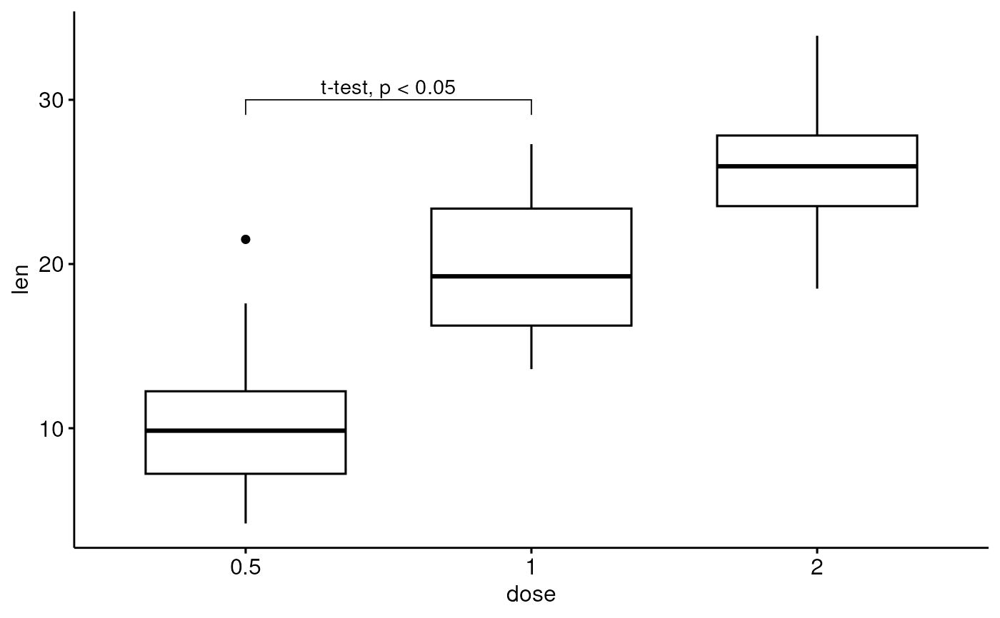
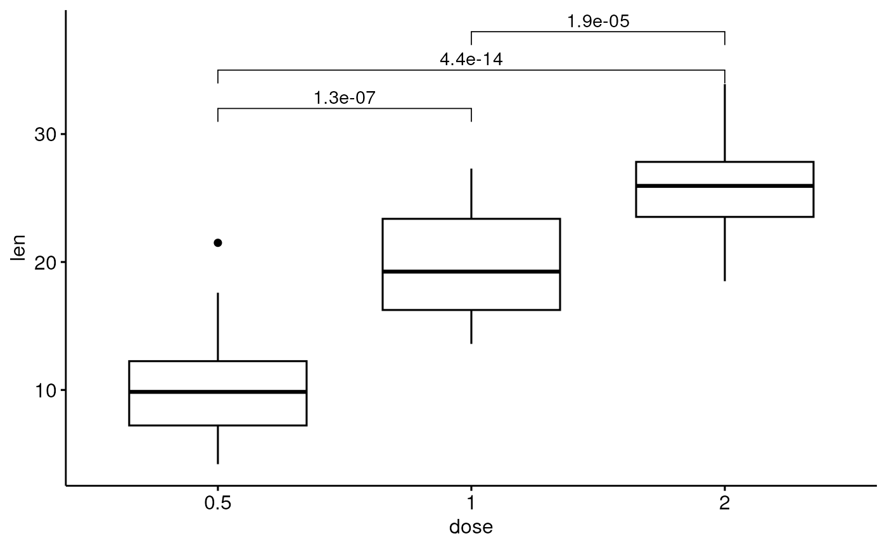
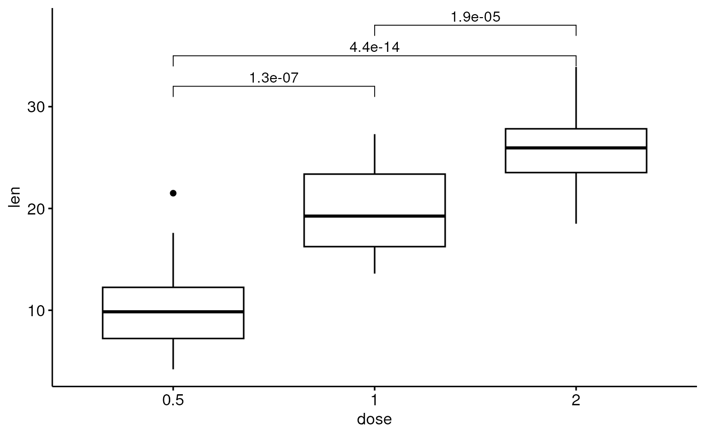

add brackets with label annotation to a ggplot. Helpers for adding p-value or significance levels to a plot.
stat_bracket(
mapping = NULL,
data = NULL,
position = "identity",
na.rm = FALSE,
show.legend = NA,
inherit.aes = TRUE,
label = NULL,
type = c("text", "expression"),
y.position = NULL,
xmin = NULL,
xmax = NULL,
step.increase = 0,
step.group.by = NULL,
tip.length = 0.03,
bracket.nudge.y = 0,
bracket.shorten = 0,
size = 0.3,
label.size = 3.88,
family = "",
vjust = 0,
...
)
geom_bracket(
mapping = NULL,
data = NULL,
stat = "bracket",
position = "identity",
na.rm = FALSE,
show.legend = NA,
inherit.aes = TRUE,
label = NULL,
type = c("text", "expression"),
y.position = NULL,
xmin = NULL,
xmax = NULL,
step.increase = 0,
step.group.by = NULL,
tip.length = 0.03,
bracket.nudge.y = 0,
bracket.shorten = 0,
size = 0.3,
label.size = 3.88,
family = "",
vjust = 0,
coord.flip = FALSE,
...
)Arguments
- mapping
Set of aesthetic mappings created by
aes(). If specified andinherit.aes = TRUE(the default), it is combined with the default mapping at the top level of the plot. You must supplymappingif there is no plot mapping.- data
The data to be displayed in this layer. There are three options:
If
NULL, the default, the data is inherited from the plot data as specified in the call toggplot().A
data.frame, or other object, will override the plot data. All objects will be fortified to produce a data frame. Seefortify()for which variables will be created.A
functionwill be called with a single argument, the plot data. The return value must be adata.frame, and will be used as the layer data. Afunctioncan be created from aformula(e.g.~ head(.x, 10)).- position
A position adjustment to use on the data for this layer. This can be used in various ways, including to prevent overplotting and improving the display. The
positionargument accepts the following:The result of calling a position function, such as
position_jitter(). This method allows for passing extra arguments to the position.A string naming the position adjustment. To give the position as a string, strip the function name of the
position_prefix. For example, to useposition_jitter(), give the position as"jitter".For more information and other ways to specify the position, see the layer position documentation.
- na.rm
If
FALSE(the default), removes missing values with a warning. IfTRUEsilently removes missing values.- show.legend
logical. Should this layer be included in the legends?
NA, the default, includes if any aesthetics are mapped.FALSEnever includes, andTRUEalways includes. It can also be a named logical vector to finely select the aesthetics to display. To include legend keys for all levels, even when no data exists, useTRUE. IfNA, all levels are shown in legend, but unobserved levels are omitted.- inherit.aes
If
FALSE(the default for most ggpubr functions), overrides the default aesthetics, rather than combining with them. This is most useful for helper functions that define both data and aesthetics and shouldn't inherit behaviour from the default plot specification. Set toTRUEto inherit aesthetics from the parent ggplot layer.- label
character vector with alternative label, if not null test is ignored
- type
the label type. Can be one of "text" and "expression" (for parsing plotmath expression).
- y.position
numeric vector with the y positions of the brackets
- xmin
numeric vector with the positions of the left sides of the brackets
- xmax
numeric vector with the positions of the right sides of the brackets
- step.increase
numeric vector with the increase in fraction of total height for every additional comparison to minimize overlap.
- step.group.by
a variable name for grouping brackets before adding step.increase. Useful to group bracket by facet panel.
- tip.length
numeric vector with the fraction of total height that the bar goes down to indicate the precise column
- bracket.nudge.y
Vertical adjustment to nudge brackets by. Useful to move up or move down the bracket. If positive value, brackets will be moved up; if negative value, brackets are moved down.
- bracket.shorten
a small numeric value in [0-1] for shortening the with of bracket.
- size
change the width of the lines of the bracket
- label.size
change the size of the label text
- family
change the font used for the text
- vjust
move the text up or down relative to the bracket
- ...
other arguments passed on to
layer()). These are often aesthetics, used to set an aesthetic to a fixed value, likecolor = "red"orsize = 3. They may also be parameters to the paired geom/stat.- stat
The statistical transformation to use on the data for this layer. When using a
geom_*()function to construct a layer, thestatargument can be used to override the default coupling between geoms and stats. Thestatargument accepts the following:A
Statggproto subclass, for exampleStatCount.A string naming the stat. To give the stat as a string, strip the function name of the
stat_prefix. For example, to usestat_count(), give the stat as"count".For more information and other ways to specify the stat, see the layer stat documentation.
- coord.flip
logical. If
TRUE, flip x and y coordinates so that horizontal becomes vertical, and vertical, horizontal. When adding the p-values to a horizontal ggplot (generated usingcoord_flip()), you need to specify the optioncoord.flip = TRUE.
Examples
df <- ToothGrowth
df$dose <- factor(df$dose)
# Add bracket with labels
ggboxplot(df, x = "dose", y = "len") +
geom_bracket(
xmin = "0.5", xmax = "1", y.position = 30,
label = "t-test, p < 0.05"
)

# Customize bracket tip.length tip.length
ggboxplot(df, x = "dose", y = "len") +
geom_bracket(
xmin = "0.5", xmax = "1", y.position = 30,
label = "t-test, p < 0.05", tip.length = c(0.2, 0.02)
)
 #Using plotmath expression
ggboxplot(df, x = "dose", y = "len") +
geom_bracket(
xmin = "0.5", xmax = "1", y.position = 30,
label = "list(~italic(p)<=0.001)", type = "expression",
tip.length = c(0.2, 0.02)
)
# Specify multiple brackets manually
ggboxplot(df, x = "dose", y = "len") +
geom_bracket(
xmin = c("0.5", "1"), xmax = c("1", "2"),
y.position = c(30, 35), label = c("***", "**"),
tip.length = 0.01
)
#Using plotmath expression
ggboxplot(df, x = "dose", y = "len") +
geom_bracket(
xmin = "0.5", xmax = "1", y.position = 30,
label = "list(~italic(p)<=0.001)", type = "expression",
tip.length = c(0.2, 0.02)
)
# Specify multiple brackets manually
ggboxplot(df, x = "dose", y = "len") +
geom_bracket(
xmin = c("0.5", "1"), xmax = c("1", "2"),
y.position = c(30, 35), label = c("***", "**"),
tip.length = 0.01
)
 # Compute statistical tests and add p-values
stat.test <- compare_means(len ~ dose, ToothGrowth, method = "t.test")
ggboxplot(df, x = "dose", y = "len") +
geom_bracket(
aes(xmin = group1, xmax = group2, label = signif(p, 2)),
data = stat.test, y.position = 35
)
# Compute statistical tests and add p-values
stat.test <- compare_means(len ~ dose, ToothGrowth, method = "t.test")
ggboxplot(df, x = "dose", y = "len") +
geom_bracket(
aes(xmin = group1, xmax = group2, label = signif(p, 2)),
data = stat.test, y.position = 35
)
 # Increase step length between brackets
ggboxplot(df, x = "dose", y = "len") +
geom_bracket(
aes(xmin = group1, xmax = group2, label = signif(p, 2)),
data = stat.test, y.position = 35, step.increase = 0.1
)
# Increase step length between brackets
ggboxplot(df, x = "dose", y = "len") +
geom_bracket(
aes(xmin = group1, xmax = group2, label = signif(p, 2)),
data = stat.test, y.position = 35, step.increase = 0.1
)
 # Or specify the positions of each comparison
ggboxplot(df, x = "dose", y = "len") +
geom_bracket(
aes(xmin = group1, xmax = group2, label = signif(p, 2)),
data = stat.test, y.position = c(32, 35, 38)
)

# Or specify the positions of each comparison
ggboxplot(df, x = "dose", y = "len") +
geom_bracket(
aes(xmin = group1, xmax = group2, label = signif(p, 2)),
data = stat.test, y.position = c(32, 35, 38)
)
